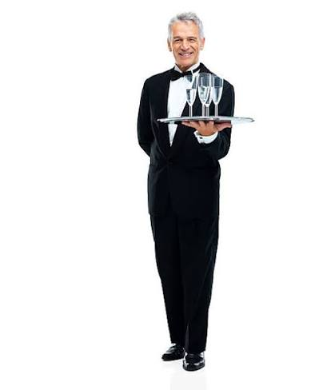

Daniel Bolaños
Encargado de liderar la cocina y supervisar cada preparación, cuidando la calidad de los ingredientes, la presentación de los platillos y cada detalle para ofrecer una excelente experiencia gastronómica.
A continuación se le presentan las personas detrás de cada experiencia y platillo que llega a su mesa. Cada uno de ellos son excelentes profesionales dedicados a ofrecer el mejor servicio.
La mejor comida
Personas que se encargan de tener tu platillo en la mesa
Encargado de liderar la cocina y supervisar cada preparación, cuidando la calidad de los ingredientes, la presentación de los platillos y cada detalle para ofrecer una excelente experiencia gastronómica.

Cocinero especializado en gastronomía italiana, apasionado por crear platillos llenos de sabor y tradición. Trabaja junto al chef para garantizar que cada receta conserve su esencia y calidad.

Responsable de atender a los clientes con amabilidad y profesionalismo, tomar sus pedidos y servir cada platillo. Su objetivo es brindar una atención cercana y hacer que cada visita sea especial.
Daniel Bolaños es el encargado de supervisar la calidad de la comida que prepara el Chef Daniel Umaña, posteriormente Alexis Rivera se encarga de lograr que su comida llegue a su mesa.